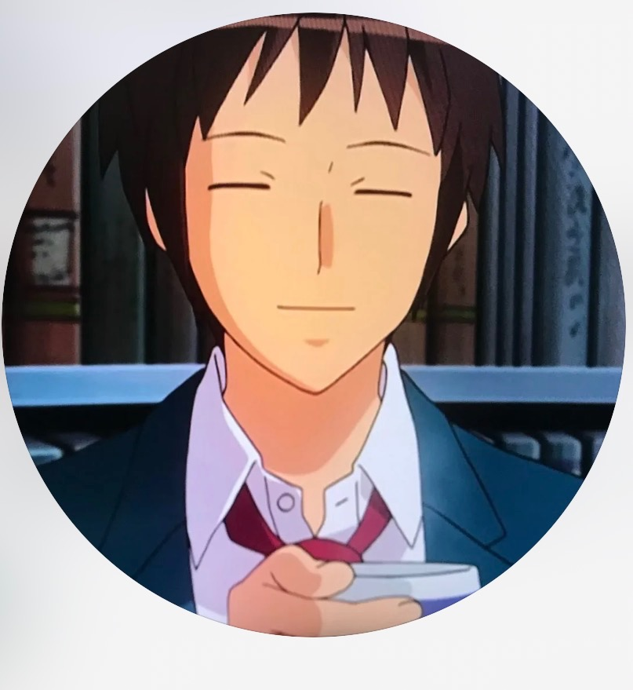

23:18
Instagram
5G
38
🧠 理智 100
🎓 學分 100
🦹 寄生 15%

孔祥暐
willyk0114
成果檢視 ·
💬 選擇你的回應（雙擊上方氣泡可按愛心）：
文化大傳 · 巨嬰應對戰
發送訊息......
Instagram 語音通話
孔祥暐
willyk0114 正在撥打給你...
「靠北我剛剛是不是按到了... 詹佳文期中到底要搞什麼」
拒接 (灰石)
接聽 (自虐)
📑 自由選擇章節跳轉
🏆
結算標題
副標題描寫
生存評級
S 級
大紅袍出招次數
1 次
偽造文書連坐防禦
完美避險
結局圖鑑收集進度
1 / 5
「他人即地獄 —— 讓巨嬰的歸巨嬰，你的歸基隆客運。」
📖 孔哥人物誌與結局圖鑑
孔哥（孔祥暐）
特權型巨嬰
@willyk0114 · 文化大傳
生活機能全面外包宗師。吃早餐怪別人「都不等的難過了」、佔位要「越後面越好」、點餐要別人「你等我我快好了」、上課要人「先幫我簽一下我人會到你放心」、報告要「所以確定交給你就好了嗎？」、被記曠課後嘆「好吧，這我認了」。
🏆 5 大結局收集圖鑑
已解鎖 0/5
🔊 孔哥經典語錄隨選回味（點擊觸發）
🏫 文化大學登場人物
- • 李明凱教授： 全場對人頭抓代簽，涉刑法第 210 條偽造私文書連坐記大過。
- • 詹佳文老師： 孔哥深夜奪命連環 Call 的核心苦主。
- • 純德老師： 兩性報告期末才繳，被孔哥一句「水感謝」白嫖情報。
- • 基哥 / 繼革： 去花蓮與出國交換，被孔哥拿來情勒「他會上來台北搭飛機呀，你搞笑啊」。